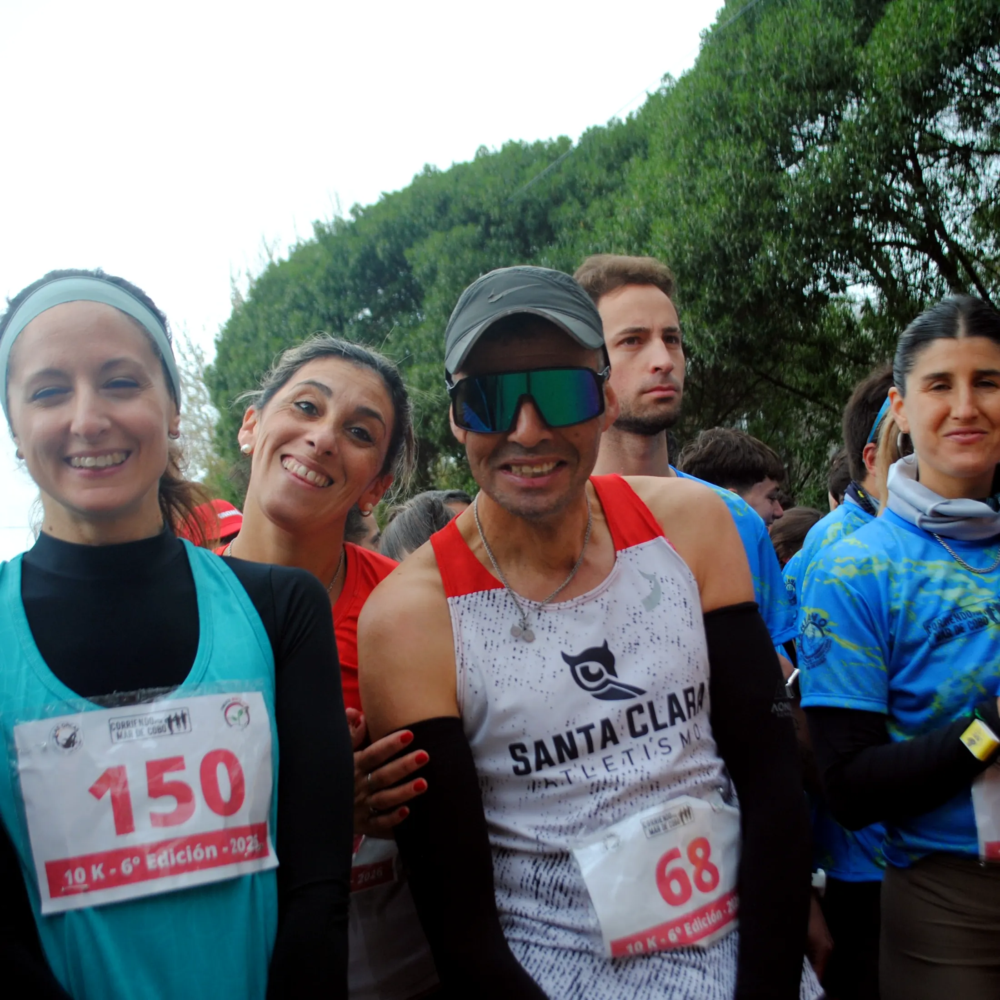

Cómo inscribirme
Son cuatro pasos y se hacen todos desde la web. El precio sube por tramos, así que conviene no dejarlo para último momento.

Elegí tu carrera
En el calendario entrás a la carrera, elegís la modalidad y la rama, ponés tu año y ves tu categoría.
Cargá tus datos
Tocás Inscribirme y completás nombre, DNI, fecha de nacimiento, celular y mail. Si ya te anotaste antes desde el mismo celular, se completan solos.
Transferí y subí el comprobante
Te mostramos el monto de hoy y la cuenta. Transferís y subís la foto o el PDF del comprobante. Sin comprobante no queda hecha la preinscripción.
Te confirmamos
Revisamos el pago y te confirmamos con el horario de acreditación y de largada. Y ya aparecés en la lista de inscriptos.
Preguntas
¿Cómo me inscribo en una carrera?
Entrás a la carrera en el calendario y tocás Inscribirme. Cargás tus datos, ves a qué cuenta transferir, pagás y subís la foto del comprobante ahí mismo. Sin comprobante no queda hecha la preinscripción. Después te confirmamos, con el horario de acreditación y de largada.
¿Cuándo me confirman?
Revisamos los pagos a mano, de lunes a viernes, a las 13 y a las 20. Por lo general no pasan más de 24 horas. Revisá también la carpeta de spam.
¿Puedo anotarme por WhatsApp o por redes?
Por redes y por WhatsApp no tomamos inscripciones. Anotate desde la página de la carrera, o anotate en persona en Bikes Amigorena (Colón 7199, Mar del Plata) o con nosotros en las carreras previas.
¿En qué categoría corro?
Se inscribe por año de nacimiento: se toma la edad que vas a tener al 31 de diciembre. En la página de cada carrera elegís la modalidad y la rama, ponés tu año y te dice tu categoría.
Me anoté y no puedo ir. ¿Me devuelven la plata?
Lo que dice el reglamento de Caminos de Luna: lo abonado no se devuelve, pero se puede transferir a otra persona hasta el 4 de diciembre. Cada sede fija su regla, así que fijate en la página de tu carrera.
¿Cuándo salen los resultados?
En general el mismo día de la carrera, acá en la web. Por categoría y por general. Con tu nombre también encontrás todas tus carreras anteriores.
Quiero cronometrar mi carrera. ¿Qué hago?
Contanos fecha, lugar y cuántos corredores esperás, y te pasamos un presupuesto. Vas a Cronometraje, completás cuatro datos y nos llega por WhatsApp.